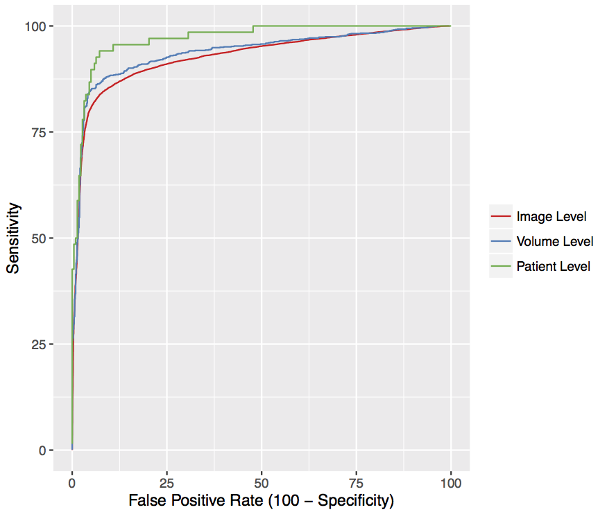
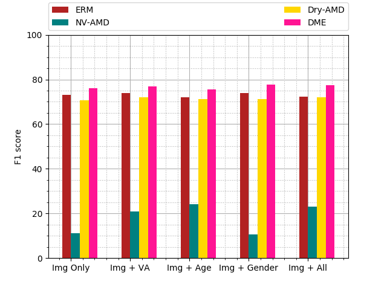
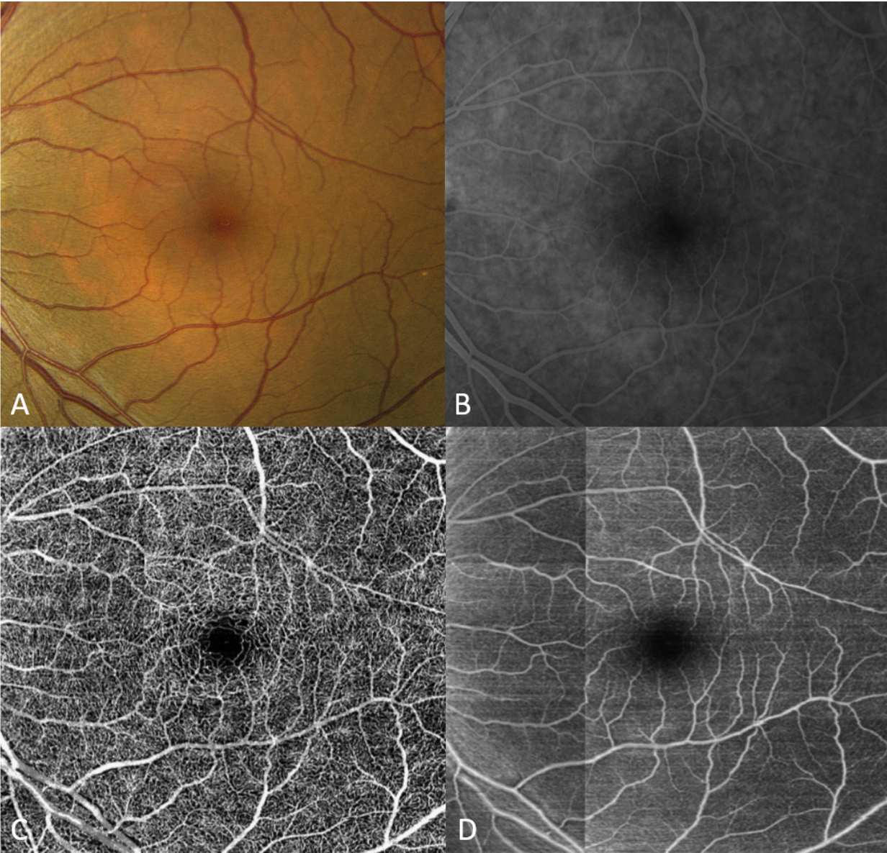

The era of brain observatories
Challenges and opportunities for computational neuroscience
May 31st, 2018, Edmund and Lily Safra Center for Brain Sciences
Ariel Rokem, University of Washington eScience Institute

The era of brain observatories
Allen Institute for Brain Science
Opportunities
New data sets enable new analysis methods
Data-driven discovery
Machine learning
Learning from data
Features of the data are extracted/engineered
Training data is used to infer model parameters
Test data is used to evaluate accuracy
Challenges
Methods that work in standard use may fail in large datasets
Interpretation challenges
Large-scale analysis requires large-scale computation
Existing sociotechnical structures are strained
(training, publication, collaboration)
Opportunity: learning from large-scale datasets
Sa Xiao

Aaron Lee
Parmita Mehta
Artificial neural networks
A family of machine learning algorithms
Biologically inspired
Artificial neural networks

Artificial neural networks
A family of machine learning algorithms
Biologically inspired
Implement a cascade of linear/non-linear operations

Artificial neural networks
A family of machine learning algorithms
Biologically inspired
Implement a cascade of linear/non-linear operations
Learn by back-propagating the errors through the network

Convolutional networks
A way to reduce the number of parameters
Capitalizes on spatial correlations in images
Inspired by the mammalian visual system


Optical Coherence Tomography (OCT)
High-fidelity in vivo measurements of retinal structure at micron resolutionThe UW OCT/EMR data-base
10 years (2006-2016)
9,285 patients
43,328 OCT volumes
2.64 million OCT images
2.5 TB of data
Linked to EPIC electronic medical records
For each OCT we know:
Visual acuity
OCT interpretation
Diagnosis
Treatment determinations
In some cases - longitudinal measurements
Deep learning is effective for the classification of OCT images of normal versus Age-related Macular Degeneration
Is there a ball in the picture?
How about now?
And now?
Deep learning network identifies clinical features
Solving multi-class multi-label problems
Binary classification doesn't model clinical decision making
Patients can have any of a several diseases
Patients can have more than one disease
Augmenting the neural network with additional patient information
Fully convolutional networks
Take an image as input and produce an image as output
Intraretinal fluid segmentation
Intraretinal fluid segmentation
Intraretinal fluid segmentation
Intraretinal fluid segmentation
U-net based image synthesis

OCT => OCTA
OCT => OCTA
MRI => MRI
MRI => MRI

MRI => MRI
What is this good for?
Application: cross-modal image registration
An example with diffusion MRI


Summary and conclusions
Fully convolutional neural networks are used for cross-modal image synthesis
There are already applications (e.g., cross-modal registration)
But more questions that answers:
What is it learning?
Can it tell us anything new about the physics of contrast mechanisms?
Opportunity: learning structure

Adam Richie-Halford

Noah Simon

Jason Yeatman
Automated Fiber Quantification (AFQ)

Automated Fiber Quantification (AFQ)

Amyotrophic Lateral Sclerosis (ALS)
Disease of upper and lower motor neurons
=>Focus on corticospinal tract

Classify patients based on the tissue properties in this part of the brain
=> 80% accuracy
Data-driven approach

Logistic regression

But in our case p (number of variables) >> n (number of subjects)
The Lasso

But the standard lasso ignores the known structure in the data
The Group Lasso

But the group lasso does not enforce overall sparsity
Sparse Group Lasso

Fitting meta-parameters
Nested cross-validation
XXX
=> Classification accuracy of ~84%, AUC of 0.9
Challenge: Methods that work in standard datasets may fail in Big Data
Research protocols that require expert examination
Time consuming, tedious
=> Do not scale well!
Scaling expertise with citizen science

Anisha Keshavan
Jason Yeatman
The solution
Train machine learning algorithms
But: for many tasks, not enough training data
=> Amplify labeled data-sets with citizen science
Example
Quality control of T1-weighted images

https://braindr.us

Braindr
Are you at work but feel like playing Tinder? Why not play braindr (https://t.co/yXw191Q7Hy) instead, and help neuroscientists rate the quality of brain images? Swipe left to fail bad quality images! Built with @vuejs and @Firebase #citizenscience pic.twitter.com/tpI9Y3UKOb
— anisha (@akeshavan_) February 7, 2018
Multiple ratings per image

But often, no agreement

Aggregating across raters

Aggregating across raters

Aggregating across raters
Scaling expertise using citizen scientist ratings

Scaling expertise using citizen scientist ratings

Sociotechnical challenges
Incentives for data sharing Collaboration in open source software TrainingContact information